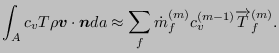
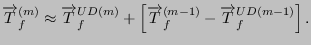

Next: Diffusion term Up: Conservation of Energy (compressible Previous: Transient term Contents
|  | (644) |
Notice that the corrected mass flow (calculated in iteration  )
is taken!
)
is taken!
 is approximated by (cf. the exposure
in the section on the conservation of momentum):
is approximated by (cf. the exposure
in the section on the conservation of momentum):
|  | (645) |
The boundary conditions amount to:
| (646) |
Consequently, the facial value is identical to the upstream element center value.
For the convective interpolation of  the modified smart algorithm has not
shown any advantages, therefore, the upwind difference scheme is always used.
the modified smart algorithm has not
shown any advantages, therefore, the upwind difference scheme is always used.